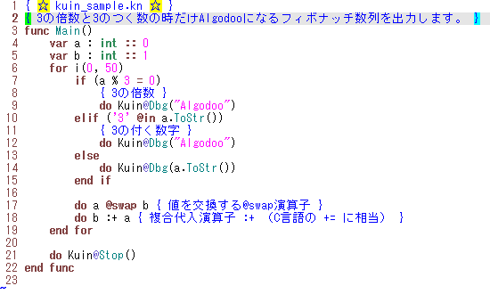

kuin.vim (Kuin用 Vim設定ファイル)
シンタックスハイライト定義ファイル & インデント定義ファイル
Last Modified: 2013/03/25 01:28:45.
日本語(Japanese), English
Kuin関連ページ紹介に戻る
概要
kuin.vimは、Kuin用のVim設定ファイルです。
自作言語Kuin 言語仕様Ver.0.03 @ Tes.Soを参考に作成しました。
※Kuinは、くいなちゃん(@kuina_tesso)が考案したプログラミング言語です。
|
【使用イメージ】  (画像をクリックするとソースコードが表示されます) |
ダウンロード
【自己責任でご利用下さい】
2013/03/25 更新
kuin-vim-20130325.zip
Kuin用 Neocomplcache-snippets-complete 設定ファイルをインストールするとさらに便利です。
- 以前、拡張子の定義（下記）を、_gvimrcに書いて頂くようにしていましたが、ftdetectフォルダにkuin.vimを置くのが正道のようです。
autocmd BufRead,BufNewFile *.kn set filetype=kuin
【重要】以前 _gvimrcに上記1行を追加した方は、その行を削除してください。
よろしくお願いします。
インストール手順
ダウンロードした zipファイルを解凍し、C:\Program Files\vim\vim73（環境により異なる可能性があります）の下にコピーしてください。
各フォルダの中にはkuin.vimが入っています。各フォルダの役割は下記の通りです。
- "ftdetect"フォルダ：拡張子定義ファイル
- "ftplugin"フォルダ：ファイルオプション定義ファイル
- "indent"フォルダ ：インデント定義
- "syntax"フォルダ ：シンタックスハイライト定義
更新履歴 / 古いバージョンの入手
更新履歴 を御覧ください。
不具合について
不具合を発見された場合、@tatt61880にご連絡頂けると幸いです。
匿名希望の場合は、interviews経由で指摘頂いても構いません。
既知の不具合を知りたい方は、 既知の不具合 を御覧ください。
kuin.vim (Kuin用 Vim設定ファイル) dl.dropbox.com/u/9975638/kuin… シンタックスハイライトとインデントの定義ファイルです。テキトーな作りですが、ないよりはマシなはず。 :-) #Kuin7月 21, 2012
※上記のツイート以降、大幅に改善されました。
Kuin関連ページの紹介
Copyright (C) Tatt(タット) ---- Twitterアカウント @tatt61880